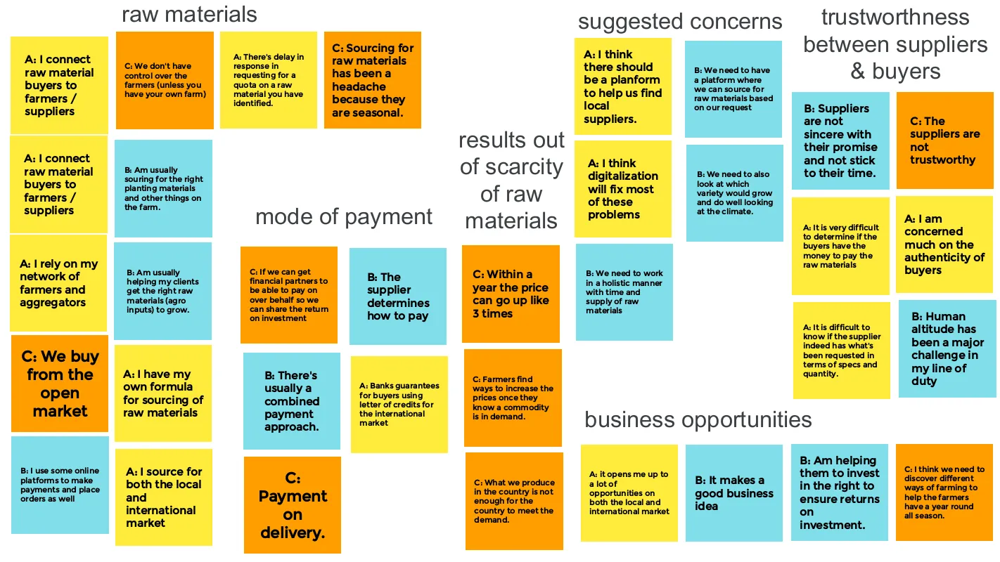
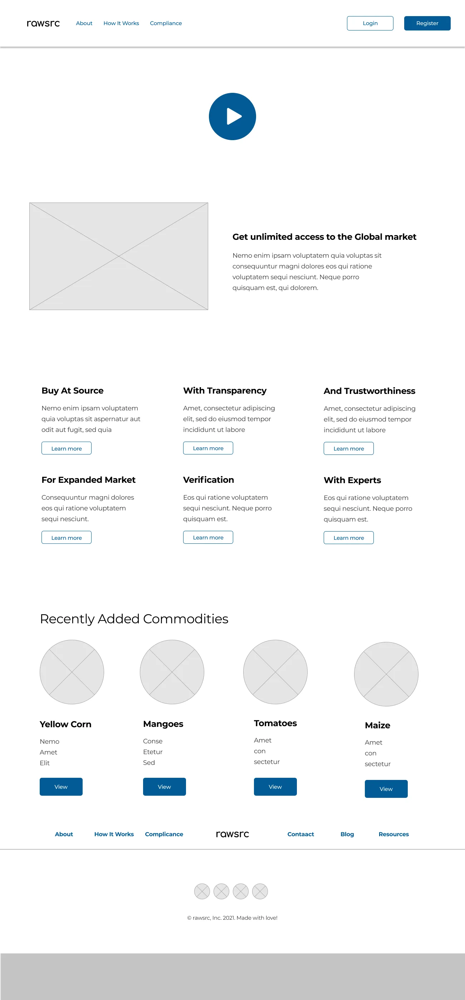

rawsrc,
the commodities marketplace
OVERVIEW
ROLE
This case study is about the design of an agricultural platform for buyers or
manufacturers who source for agricultural produce as raw materials for
processing, production, and or consumption.
The problem is the lack of diversity in the
marketplace which makes it difficult for buyers to find what they want and farmers on the other hand
struggle to sell their produce due to the market cluster.
Our solution will impact farmers
by giving them access to a wider, direct and ready market which will intend lead to reduce the storage
time of produce, cost of produce and risk of produce value losses.
UX Designer
User Research, Visual Design, Prototyping
& Testing
June, 2021 - August, 2021
‍
Discovery: Research & Analysis
We wanted to understand the experiences manufacturers go through in sourcing for
agricultural produce. We interviewed 3 participants to understand their current system and how their
experiences have been (if any) in the digital world (especially in this pandemic era).
Key findings:
- mistrust between buyers and suppliers.
- disconnection between buyers and suppliers.
- equal access to an open market.
- trade on a fair deal.
Our solution would ensure to:
- bridge the gap between the buyers and suppliers.
- increase trust and transparency among both users.
Design: Concepts & Sketching
On our market research tour, we visited over 50 farmer groups and buyers’
associations across the country, we defined our hypothesis on understanding the experiences these buyers
go through in souring for raw materials.
We prepared a research plan which included research questions, research goals, method of recruiting
participants, interviewing participants and analyzing our findings into valuable insights.

Once we got through with that, we began sketching these insights into designs for ideas, features and or
solutions.
Got through different sketches of design iterations on ideating on the core focus we want to portray
through the project.
Develop: Prototyping - LoFi
The paper sketch designs were converted into a digital format in a form of a
low
fidelity prototypes, these low fidelity prototypes was made available for testing.
The low fidelity prototype focuses on the following key features /
functionalities:
- lading page.
- user registration (Sign up & Login) page.
- produce page.
Develop: Prototyping - HiFi
After testing with the Low Fidelity prototype, High Fidelity prototype was
made available based on the feedback from the earlier usability study on
the low fidelity prototype.
The high fidelity prototype focuses on:
- lading page.
- user registration (Sign up & Login).
- produce page.
- navigation, buttons, colors, links.
- accessibility.

Test: Validation, Usability, Feedback
Once the prototype was ready, we had some users who signed up to be contacted
further on
our research study. 10 of these users were recruited and given the opportunity to test the
prototype and give feedback. This was done remotely over video call where we observe users as
they complete tasks.
After the usability testing here are the findings:
- agreeability. 80% agreed on the need for an online commodities marketplace.
- maneuverability. 80% understood the platform and was able to maneuver their way
though the pages.
- usability. 80% of the respondents were able to register and view the products page.
- conversion. respondents didn’t login since once they sign up, they are into the
system, so once they
are into the system, they complete all the tasks, logout and then end the session.
- next step. respondents were able to access the products page but didn’t know what
to
do from there,
they were trying to figure out where to click, where is clickable and so on.
Design: Iteration
Based on the feedback insights gathered from the usability testing.
- accessibility. have updated the design to be accessibility friendly with a score
of AAA+ rating with Web AIM’s color contrast tool.
- colors. have also worked on the primary color buttons to be large and
visible to match the specifications.
- navigation. Navigation links which are the menus, links, footer links are fixed
with primary colors visible enough to be clickable and identifiable.
Solution & Impact Overview
We believe that this platform would meet the buyers needs in sourcing for
produce and also give the suppliers access to a wider and ready market.
KPIs:
- Based on the data point that users struggle finding the post button, we have
made the C.T.A on the products page standalone to increase the success rate.
- We have increased the success rate of the CTA button (POST) to 100% conversion
rate by increasing the button and making it clearer.